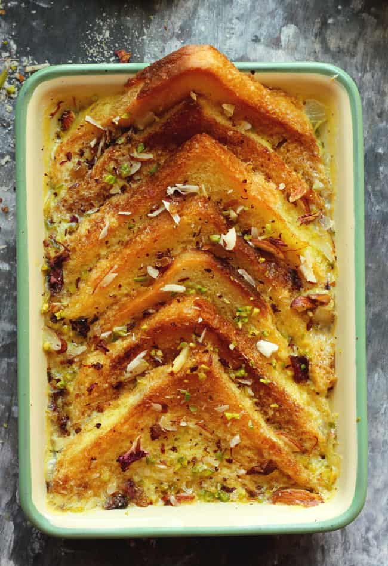

Double Ka Meetha

Descrition
Double Ka Meetha is a traditional Hyderabadi dessert made from bread slices soaked in a rich mixture of milk, cream, and sugar, then flavored with cardamom and garnished with dry fruits. The name "Double Ka Meetha" refers to the "double roti," or bread, used in the dish. This sweet treat is often served at festive occasions and special events, offering a deliciously sweet and indulgent end to any meal.
Ingredients
- 8 slices of White Bread
- 1 cup Sugar
- 1 cup Water
- 1/2 cup Ghee (clarified butter)
- 1/2 cup Milk
- 1/4 cup Condensed Milk
- 1/2 tsp Cardamom powder
- 2 tbsp Raisins
- 2 tbsp Cashews
- 2 tbsp Almonds, sliced
- 2 tbsp Pistachios, chopped
Instructions
- Cut the bread slices into quarters or halves and set them aside.
- Heat ghee in a deep pan and fry the bread pieces until they are golden brown. Remove and drain on paper towels.
- In the same pan, lightly fry the cashews, almonds, pistachios, and raisins until golden. Remove and set aside.
- In a separate pot, combine the sugar and water to make a sugar syrup. Bring to a boil and let it simmer until slightly thickened. Add cardamom powder and stir well.
- In another pot, heat the milk and condensed milk together. Bring to a gentle boil and then lower the heat.
- Place the fried bread pieces in the pan with the sugar syrup and let them soak for a few minutes, ensuring they absorb the syrup.
- Pour the warm milk mixture over the soaked bread pieces and cook on low heat until the bread softens and absorbs most of the liquid.
- Garnish with the fried nuts and raisins.
- Serve warm or chilled as desired.